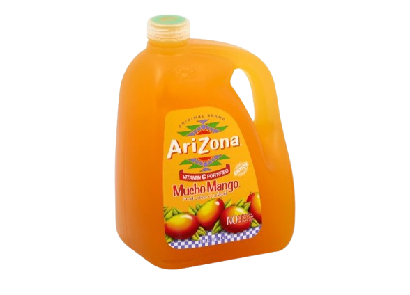
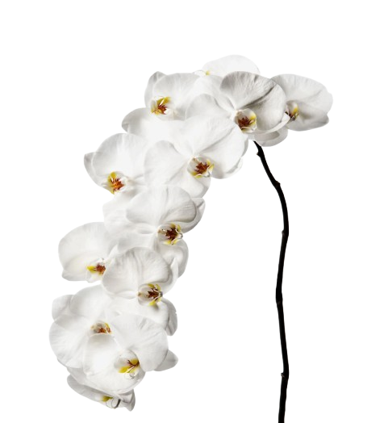
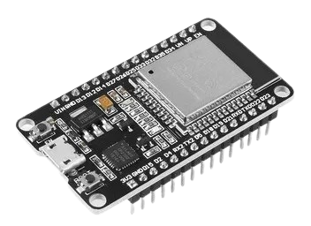
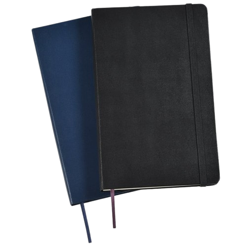

Photography
(tap to flip!)
Usually, when I go outside to nice places, I spend my time on photography. Its definitely a hobby I enjoy albeit I don't post as frequently as I would like. Its something I'm trying to change
Arizona
(tap to flip!)

I absolutely enjoy the Arizona drink. I'm afraid I am genuinely an Arizona-holic. I love it so much that it practically is a hobby of mine (might as well, right?). If possible, I would even make a chair out of Arizona cans.
Coding
(tap to flip!)

I LOVE coding, if I had to choose which of my hobbies I spend most of my time on the most, then it would 100% be coding (this website was lit made from scratch with code I was learning) the photo is part of the first code design draft I wrote for this Hobbies page. Small things like this website are mini projects I enjoy doing
Moth Orchids
(tap to flip!)

I may not have many plants in my room, but I do take care of 5 moth orchids, all of which were literally gifted to me. I have taken on the little duty of a caretaker for the plants.
Hobbyist Electronics
(tap to flip!)

Hobbyist electronics is basically just coding, but now its physical. I enjoy making little gadgets and experiments with what I have. It is a hobby I do often but not as often since it involves just buying more and more pieces for every new project I want to try out
Sketchbooks
(tap to flip!)

one of the first hobbies I ever had was sketching. I am by no means good in any sense but I try to learn more as I go. I took a break for like 2 years and started getting back into it somewhere around august of 2025